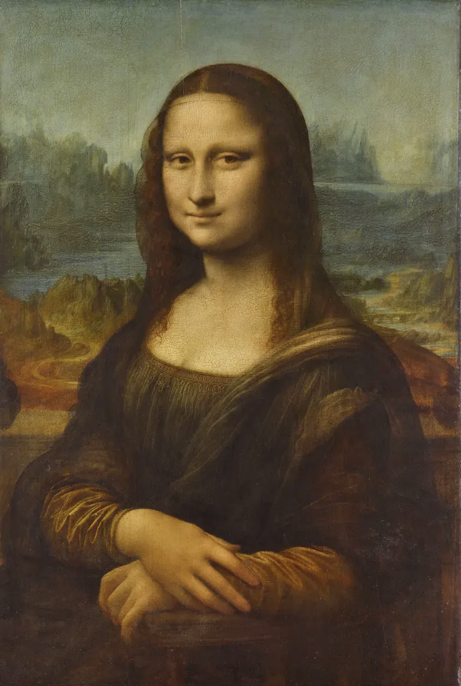
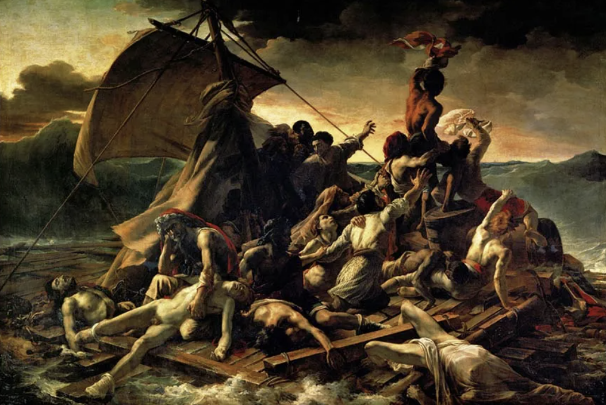
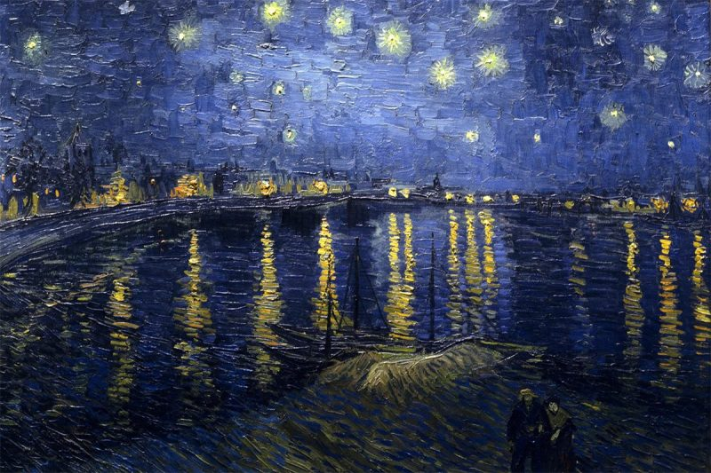
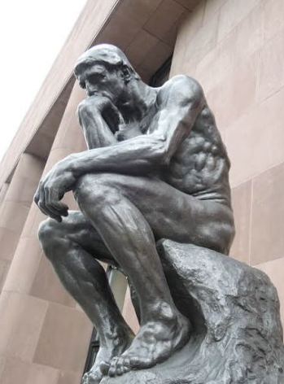

France has been a major hub for art for centuries, from the ancient Lascaux cave paintings to world-famous museums like the Louvre and Musée d'Orsay in Paris. During the 19th and 20th centuries, French painters like Claude Monet helped launch Impressionism, changing how artists captured light and everyday life. Today, that creative tradition continues through modern street art, cinema, and fashion, keeping art a central part of everyday French culture.